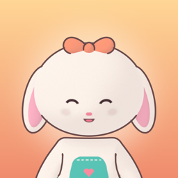

Write to us and we'll get back to you: wannatext@icloud.com. Please mention your device model and iOS version.
How do I seat guests?
Tap a group in line, then tap (or drag them to) a clean, free table. Tables and stations you tap are queued as Mochi's route; a two-finger tap cancels the route.
What does the Full Game purchase include?
The first café (20 days) is free. A one-time purchase unlocks the Crossroads Diner, the Starlight Restaurant (40 more days) and all three Endless modes. No ads, no subscriptions.
I bought the Full Game on another device or reinstalled the app.
Open Settings in the game and tap Restore purchases (also available on the unlock screen). Use the same Apple Account you bought it with.
My progress is gone after closing the app.
Progress is saved between days. If the app is fully closed in the middle of a day, that day starts over.
How do I turn off music, sounds, vibration or tips?
Main menu → Settings.
How do I delete my data?
All data stays on your device. Delete the app to remove it. See the Privacy Policy.